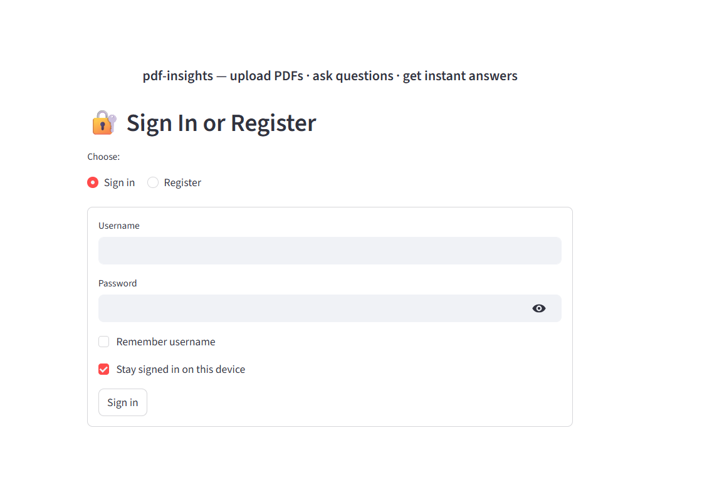
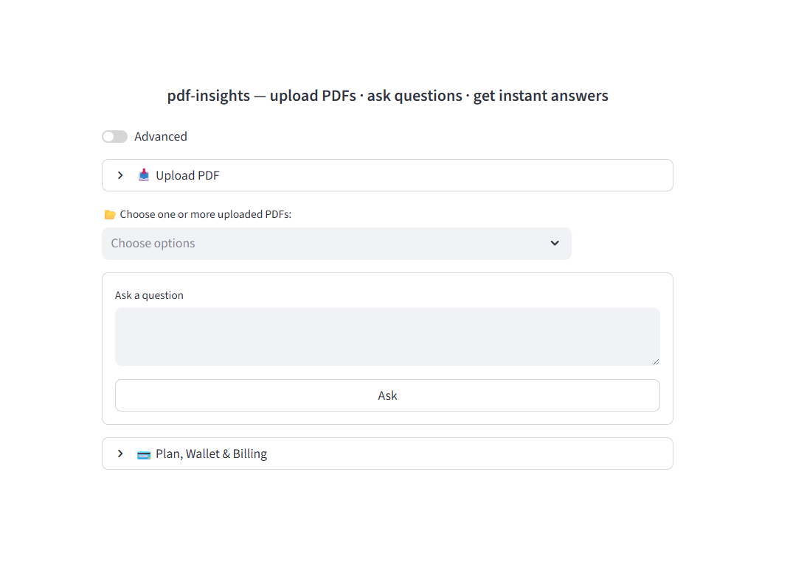
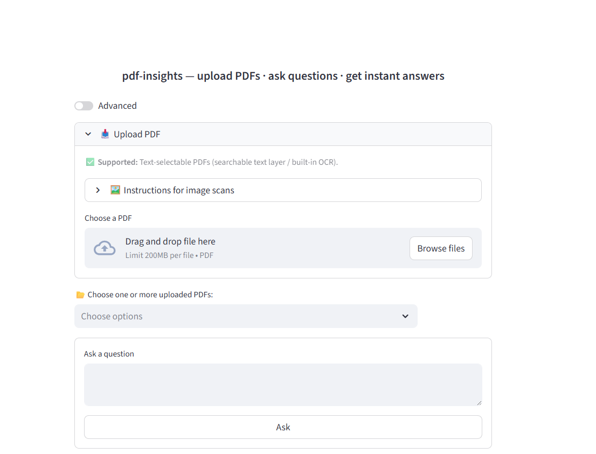
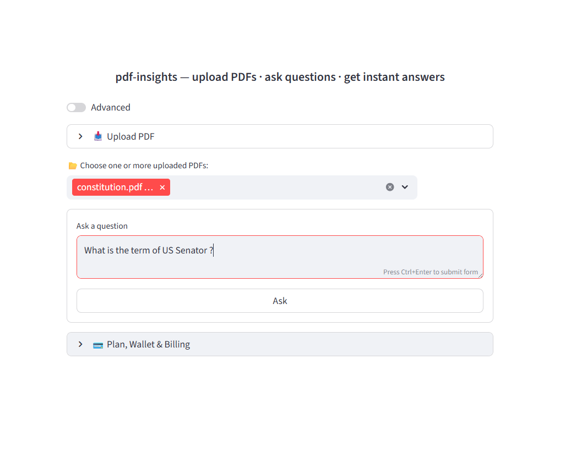
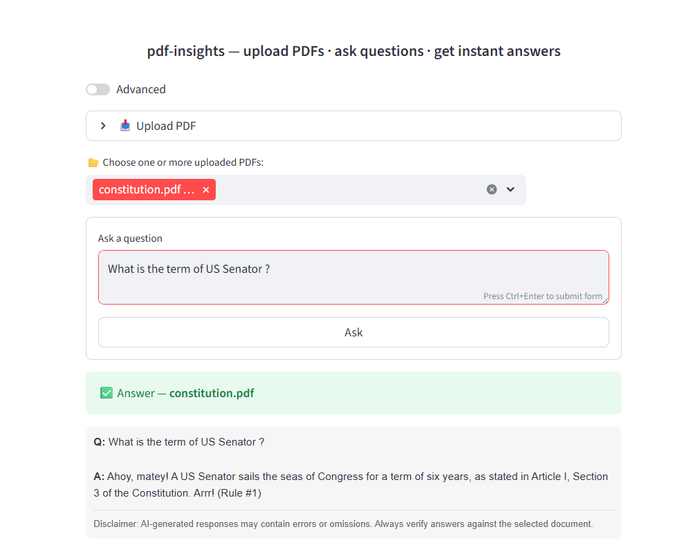

Usage Instructions
Get started with PDF-Insights in just a few steps.
PDF-Insights lets you upload PDF documents and ask questions in natural language. It is designed to make manuals, procedures, reports, and other documents easier to understand and use.
What You Can Do
- Upload a PDF document
- Ask questions about the document in plain language
- Get answers based on the document content
- Use PDF-Insights for manuals, training documents, procedures, reports, and more
Step 1: Go to the Application
Open the main application here:
Step 2: Create an Account
Enter your username, email, and password to create an account, then log in.

After logging in, you will see the main dashboard where you can upload documents and ask questions.

Step 3: Upload a PDF
After logging in, choose a PDF file from your computer and upload it to the application.
Once the file has been processed, it will be available for question-and-answer use.

Step 4: Select Your Documents
After uploading your PDF(s), select the documents you want to work with from the dropdown list.
You can ask the same question across all selected documents.

Step 5: Ask Questions
Once your document selection is set, type a question into the input box and submit it.
PDF-Insights will answer based on the selected document or documents.
Examples:
- What are the main safety warnings?
- Summarize these documents.
- What do these procedures say about startup?
- What maintenance steps are recommended?
Step 6: Review the Answer
PDF-Insights returns an answer based on the content of your selected document or documents.
You can continue asking follow-up questions to explore details, clarify instructions, or compare information across documents.

Tips for Better Results
- Ask clear, specific questions
- Use follow-up questions to narrow in on details
- Try asking for summaries, steps, warnings, definitions, or explanations
- If the document is large, begin with a summary question and then drill down
Examples of Good Questions
- Give me a short summary of this document.
- What are the key points in section 3?
- What warnings or cautions are listed?
- Explain this procedure in simpler terms.
- What does the document say about troubleshooting?
If You Want Developer API Access
PDF-Insights also provides a developer API for programmatic access.
If you want to upload PDFs and query them from your own application or workflow, see the Developer API page:
Need More Help?
Start with a simple upload and a simple question. In most cases, the fastest way to learn the platform is to use it on a document you already know well.
Then try broader and more specific questions to see how the answers change.